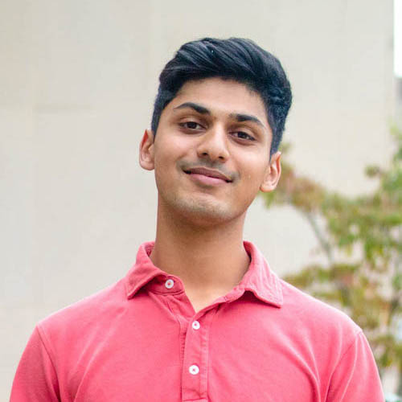
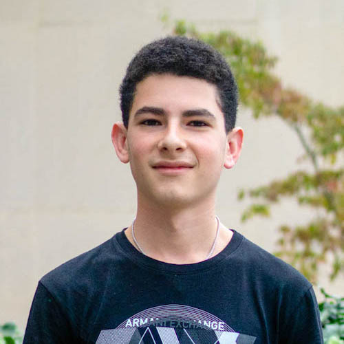

ABOUT US
SUBTEAMS
MEMBERS
SPONSORS
RECRUITMENT
CONTACT
MEMBERS
Executive Board
Clare Snyder
Joshua Popp
Cynthia Horna
Business & Design
Team Lead
Jacqueline Glyman
Samantha Lee
Domestic
Team Lead
Isha Pradhan
Sushruta Iruvanti

Shaun Nuzzo
Isabella Salas-Allende
Ilagala, Tanzania
Team Lead
Ilana Hill
Team Lead
Jaimie Diamond
Mihoko Sakanaka
Debo Adebola
Samuel Sapoznik

Irene Sarri
Technical Development
Team Lead
Galit Wiener
Thomas Lee
Ali Moraveck
Spencer Hong
©2012-2017 Engineers Without Borders Cornell
Youtube
Twitter
LinkedIn
Instagram
Facebook